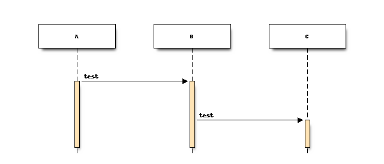

ナビゲーション
索引
次へ
前へ
test_document 1.0.0 ドキュメント
»
1. sphinx やってみた1
¶
試しに、こんな感じのページを
作ってみる！
ID
Value
3
データ3
4
データ4

Name
Description
A
browsers in each client
B
web server
C
database server
Previous page
← Welcome to test_document's documentation!
Next page
→ 2. sphinx やってみた２
このページ
ソースコードを表示
クイック検索
«
hide menu
menu
sidebar
»
ナビゲーション
索引
次へ
前へ
test_document 1.0.0 ドキュメント
»